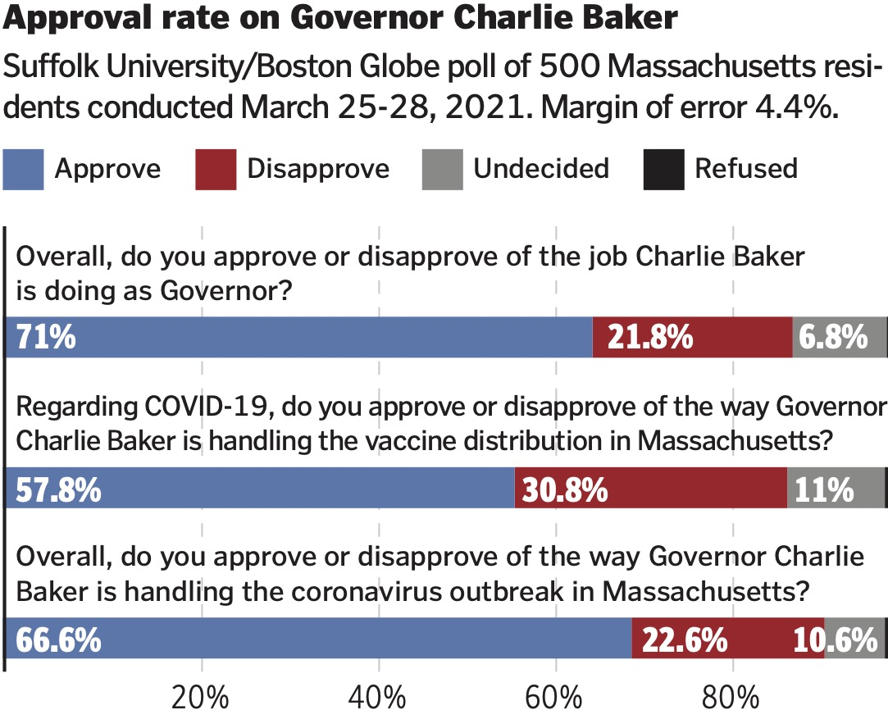

My day as the Page One Designer for The Boston Globe begins with a morning meeting involving department-head editors representing their reporting teams that discuss the stories that will be available that day. At the end of the meeting, the two managing editors, the two editors in charge of the daily operation of the newsroom and only behind the editor-in-chief in rank, give a list of which stories will be considered for the the next day's front page. From there, an assistant photography editor will give me all available photos pertaining to the stories listed. Usually, the list contains 10-15 stories, which will be whittled down to 5-6 by the end of the day.
On this particular day, the managing editors would like to display a business story involving buying and renting high-end luxury condos and apartments in downtown Boston. Our photo department assigns a photographer to go shoot updated photos that afternoon, so in the mean time, I use file photos of three of the buildings mentioned in order to mock up a draft for the editors to see for our early afternoon update meeting. After I make rough cutouts of the file building photos, I search our stock imaging sites for cloud photos. I prefer to grab at least two photos that vary in style to give myself options in Photoshop without having to go back to the stock site.
Once I have the initial rendering of the photo illustration ready, I begin to build the first draft of the page in InDesign, based on which other stories were mentioned in the morning meeting. At this point in the day, late morning, early afternoon, the majority of stories have not been filed yet, as reporters are usually conducting interviews and going over their first drafts with their editors. So I'll coordinate with the photo editor to showcase what we have so far, along with the skyscraper illustration.
By the early afternoon, after my second meeting with the managing editors, I have a pretty good idea of the direction of the page. I am told that one of our stories is being written off of a pole we gave to our readers asking various questions about current events. They would like for me to create a graphic highlighting the primary question from the survey. I begin that process by creating the chart in Adobe Illustrator. From there, I'll take that rough copy and bring it into InDesign, where I'll stylize the bars and add the relevant type.
The photographer files his photos by mid-afternoon, and I take them into Photoshop to cut them out and combine them with the edited cloud photo. Once that is complete, I'll take the document and combine it with the poll graphic to create an updated version of the page, along with the photo I received earlier in the morning. I will then present this at a mid-afternoon meeting with a combination of department-head editors from the morning meeting and night editors who will put the entire newspaper together that evening.
The photographer files his photos by mid-afternoon, and I take them into Photoshop to cut them out and combine them with the edited cloud photo. Once that is complete, I'll take the document and combine it with the poll graphic to create an updated version of the page, along with the photo I received earlier in the morning. I will then present this at a mid-afternoon meeting with a combination of department-head editors from the morning meeting and night editors who will put the entire newspaper together that evening.